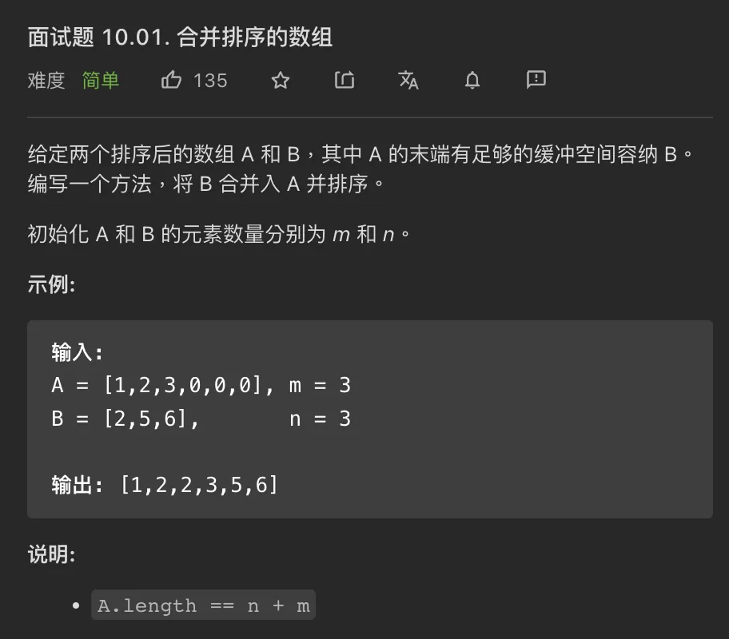

面试题 10.01. 合并排序的数组
Question

✍🏽 My Solution
执行用时：0 ms, 在所有 Java 提交中击败了100.00%的用户
内存消耗：41.2 MB, 在所有 Java 提交中击败了39.93%的用户
class Solution {
public void merge(int[] A, int m, int[] B, int n) {
if (n == 0) return;
int len = m+n;
int[] tmp = new int[len];
int p = 0;
int q = 0;
int i = 0;
while (p < m && q < n) {
if (A[p] <= B[q]) {
tmp[i++] = A[p++];
} else {
tmp[i++] = B[q++];
}
}
while (p < m) {
tmp[i++] = A[p++];
}
while (q < n) {
tmp[i++] = B[q++];
}
p = 0;
i = 0;
while (i < len) {
A[p++] = tmp[i++];
}
}
}
🧠 Thought Process
- Why did I choose this particular implementation?
- 申請一個新的數組tmp，長度為m+n
- 建立 p 和 q，分別遍歷A跟B數組，直到這兩個數組都小於m或n
- 判斷如果這兩個數組都還有值，則將剩下的數組直接加到tmp後方
- 此時tmp跟A數組大小相同，將tmp所有數值依序複製到A數組
- What is the time/space complexity of my solution? How do I know?
- time: O(m+n)
- space: O(m+n)
- What mistakes did I make?
- 原本最後一段是共用 i，導致 i ++ 各了兩次
A[p++] = tmp[i++]; - 原本只考慮到A數組的邊界條件，沒考慮倒B數組，導致越界
- 原本最後一段是共用 i，導致 i ++ 各了兩次
- What can I do next time to make sure I don't make the same mistakes again?
- 看一下循環之內的數值，確保不越界